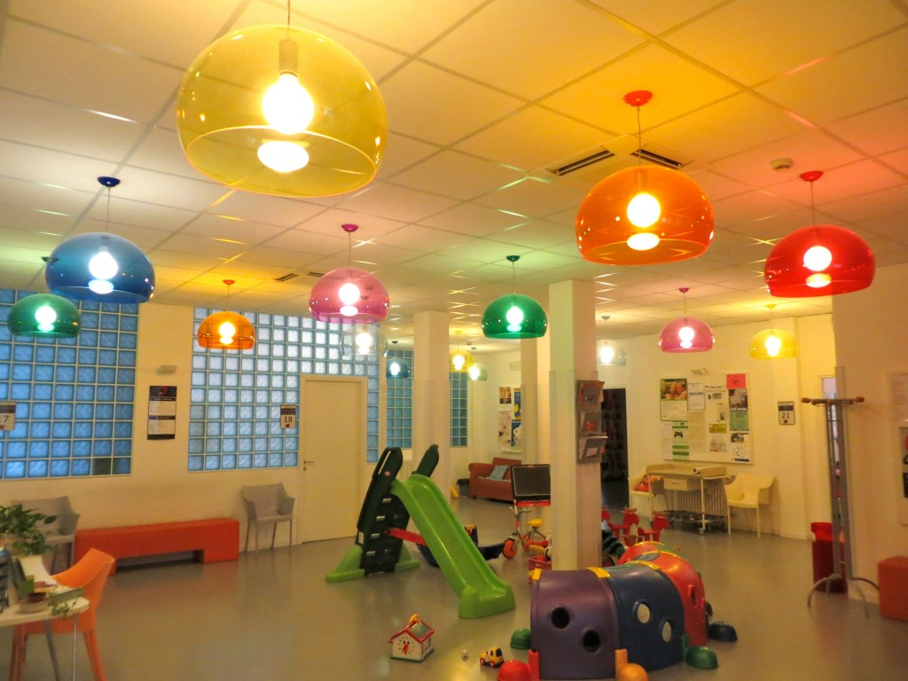

Isn't it cool? I've wrote a post about it in my design/home staging blog, if you want to learn more about it. Anyway, back to my Odyssey: I leave, take the first bus, then take the second bus and with Charlie's help (aka my iPhone) I get to the right office. There's only one person in front of me, impressive, I don't even have the time to grab my Kindle and the snack/lunch I brought with me (I always pack well and for the worst case scenario when I head to an office in Italy). I explain what I need to the lady behind the counter, she takes my papers, makes a copy and says: "Ok, that's it, thanks". Thanks? I ask if I can get a statement or something to provide to the school and she goes: "No signora, we need to enter these data in the system first, you need to come back tomorrow". Tomorrow? Another trip across the city? Therefore I ask if I can send someone else to retrieve the papers, my parents have a car and lots of time, you know... "No signora, it is better if you pick them up yourself", is what I hear. I didn't know my son's vaccinations were such a sensitive and private matter, to the point that I cannot even send a family member to pick up their translation. So, the day after I'm back there, I obtain the document, I deliver it to the school, and I'm done. No more documents to get. My Odyssey is over (until the next one at least...).The Italian Odyssey: hopping from one office to the other. Chapter 3 (end of the Odyssey)
The last document I need is the translation of the vaccinations Alessio received in the States. I'll probably never know why they didn't ask me to provide this same paper three years ago when the kids attended a different elementary school or even this year at Silvia's middle school... Anyhow, I do as they say and go to Distretto 2 (note that two people from two different offices told me to go there, so anyone would consider this information pretty accurate right? Wrong).
I get there, before the office hours and meet a very nice lady who is willing to help me nevertheless. She glances at my papers and says : "Signora, this is not the right office, we deal with kids up to 6 years of age here". My son is 9, so...
When I learn where the right office is, I realize that it is located exactly on the opposite side of the city. I need to take two buses to get there (I don't have a car in Italy and quite frankly so far I've been glad for this, I've never had such a firm buttocks...). This time though I'm not so disappointed, because thanks to this mistake I've discovered one the best lobbies I've ever seen and, as a design freak, I'm almost levitating when I see it: